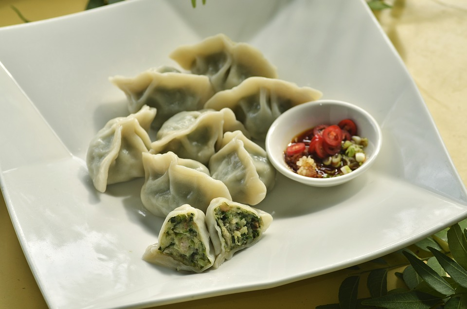

Quick and Easy Homemade Dumplings
Dumplings are an important part of Northern Chinese culture and cuisine, especially during the Lunar New Year. Eating dumplings during New Year's celebrations symbolizes good fortune and wealth for the upcoming year. I always enjoy making and eating dumplings with my family. Here's a quick and easy recipe for dumplings.

Prep time: 60 minutes
Cook time: 20 minutes
Ingredients:
- 1 head of napa cabbage
- 1/2 tablespoon salt
- 1 teaspoon fresh grated ginger
- 1/4 chopped cup green onions
- 1 pound ground pork
- 1 tablespoon soy sauce
- 1 tablespoon rice wine vinegar
- 1/2 tablespoon sesame oil
- 1/2 teaspoon ground pepper, black or white
- 1 package frozen round dumpling wrappers
Directions:
- Remove frozen dumpling wrappers and let thaw at room temperature while preparing the filling.
- For the filling, rinse and dry the cabbage leaves. Finally chop the cabbage or put in a food processor. Put the cabbage in a large bowl and sprinkle with salt to draw out moisture. Let sit for 15 minutes.
- While salted cabbage is sitting, mix together ginger, green onions, pork, soy sauce, rice wine vinegar, and sesame oil. You can do this by hand or in the food processor then set aside.
- Use your hands to squeeze out the excess moisture from the minced leaves. Put the cabbage back into the bowl and mix in the seasoned ground pork.
- Put some water in a small bowl. Take a dumpling wrapepr and fill it with a small spoonful of filling, then dip your fingers into the bowl to wet the outside edges of the dumpling wrapper (this well help form a seal).
- Bring together two sides of the wrapper to form a half-moon shape and make a crimp in the middle. Then, start from one end and make small folds to seal the edge of the dumpling together
- Place the dumpling on a baking tray.
- Cook the dumplings in boiling water for 8 minutes. Cooked dumplings will rise to the surface of the water. You can also freeze dumplings.
- Serve with soy sauce or other dipping sauces.
Comments and Feedback